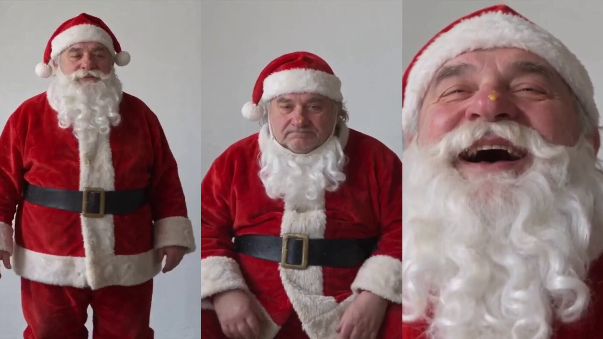
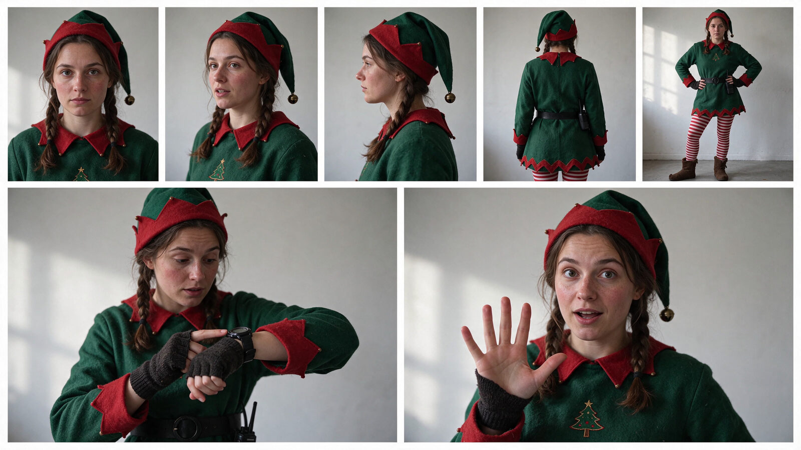
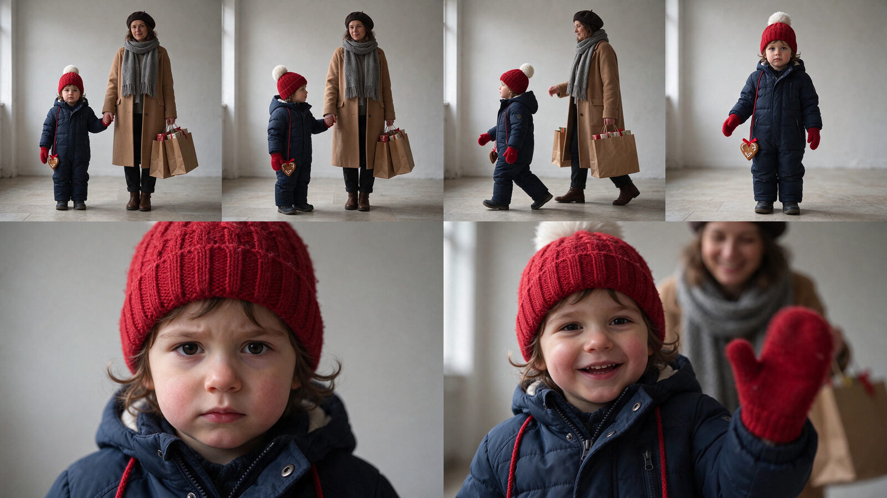
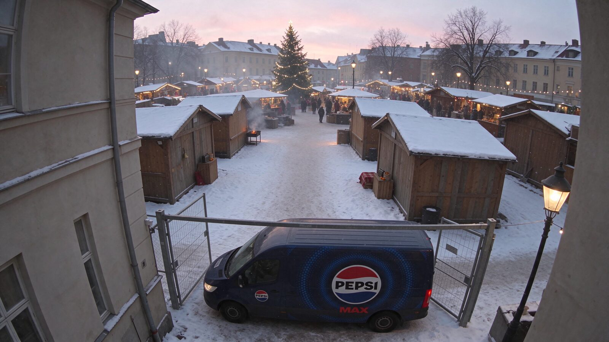
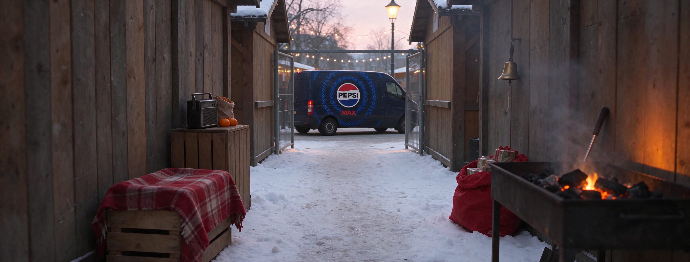

← Series← Серія← Serial · EPISODE 02 · CHRISTMAS MARKET · 50 sЕПІЗОД 02 · РІЗДВЯНИЙ ЯРМАРОК · 50 сODCINEK 02 · JARMARK ŚWIĄTECZNY · 50 s
Mikołaj
A Christmas market. Behind the stalls, Santa takes a break: beard pulled down, a sausage in hand, no Pepsi. Even Santa is not above the law.
Різдвяний ярмарок. За будиночками Миколай влаштував перерву: борода спущена, у руці ковбаска, Pepsi немає. Навіть Миколай не вищий за закон.
Jarmark świąteczny. Za straganami Mikołaj robi sobie przerwę: broda opuszczona, w ręku kiełbaska, Pepsi brak. Nawet Mikołaj nie stoi ponad prawem.
OverviewКороткоW skrócie
TaskЗадачаZadanie
Write and make an original episode beyond the four stories in the brief — one that works at Christmas and in any country.
Написати й зняти власний епізод понад чотири історії брифу — такий, що працює на Різдво і в будь-якій країні.
Napisać i zrealizować własny odcinek ponad cztery historie z briefu — taki, który działa w święta i w każdym kraju.
IdeaРішенняPomysł
Santa is the last person you would suspect. Caught on a break with a sausage and no Pepsi, he becomes the patrol's most respectable offender — and the patrol has to save Christmas in front of a child.
Миколай — останній, кого можна запідозрити. Спійманий на перерві з ковбаскою і без Pepsi, він стає найповажнішим порушником патруля — а патрулю треба врятувати Різдво на очах у дитини.
Mikołaj to ostatnia osoba, którą można podejrzewać. Przyłapany na przerwie z kiełbaską i bez Pepsi, staje się najszacowniejszym przestępcą patrolu — a patrol musi uratować święta na oczach dziecka.
ResultРезультатWynik
A finished 50-second film in Polish with English and Ukrainian subtitled versions, delivered as TV and web masters from 4K ProRes to H.264.
Готовий 50-секундний фільм польською з англійською та українською версіями із субтитрами, мастери для ТБ і вебу від 4K ProRes до H.264.
Gotowy 50-sekundowy film po polsku z wersjami z napisami angielskimi i ukraińskimi, mastery TV i web od 4K ProRes po H.264.
The ideaІдеяPomysł
The client's brief offered four stories: a car park, a delivery, a cinema, a barbecue. For the Christmas season the series needed one more — so this script was written from scratch, outside the brief.
Бриф клієнта пропонував чотири історії: парковка, доставка, кіно, барбекю. Для різдвяного сезону серії була потрібна ще одна — тож цей сценарій написано з нуля, поза брифом.
Brief klienta proponował cztery historie: parking, dostawa, kino, grill. Na sezon świąteczny serial potrzebował jeszcze jednej — więc ten scenariusz powstał od zera, poza briefem.
Even Santa is not above the law.
Навіть Миколай не вищий за закон.
Nawet Mikołaj nie stoi ponad prawem.
Two rules came with it. Outdoors only: a market, with the crowd kept in the background. And nothing that gives the place away — no recognisable buildings, no signs, no lettering — so the film plays in any country and in any language.
З ним прийшли два правила. Тільки надворі: ярмарок, а натовп — лише фоном. І нічого, що видає місце, — жодних упізнаваних будівель, вивісок, написів, — щоб фільм працював у будь-якій країні й будь-якою мовою.
Przyszły z nim dwie zasady. Tylko na zewnątrz: jarmark, a tłum wyłącznie w tle. I nic, co zdradza miejsce — żadnych rozpoznawalnych budynków, szyldów, napisów — żeby film działał w każdym kraju i w każdym języku.
Director's solutionРежисерське рішенняRozwiązanie reżyserskie
Behind the market stalls Santa sneaks a break: beard down, sausage in hand, no Pepsi. An elf taps her watch, a boy spots Santa without his beard — and Pepsi Patrol arrives just in time.
За ярмарковими будиночками Миколай потай відпочиває: борода спущена, ковбаска в руці, Pepsi немає. Ельфійка стукає по годиннику, хлопчик помічає Миколая без бороди — і Pepsi Patrol встигає вчасно.
Za straganami jarmarku Mikołaj ukradkiem robi przerwę: broda w dół, kiełbaska w ręku, Pepsi brak. Elfka stuka w zegarek, chłopiec zauważa Mikołaja bez brody — i Pepsi Patrol zjawia się w samą porę.
One CCTV camera above the service yard holds the geography: the van, the passage, the market, the tree. Everything in between is the invisible amateur's handheld camera, never more than a few steps from Santa. A top-down location plan fixed every position before any generation.
Одна камера спостереження над службовим двором тримає географію: фургон, прохід, ярмарок, ялинка. Усе між ними — ручна камера невидимого аматора, ніколи не далі кількох кроків від Миколая. План локації згори зафіксував кожну позицію ще до генерації.
Jedna kamera monitoringu nad podwórzem gospodarczym trzyma geografię: bus, przejście, jarmark, choinka. Wszystko pomiędzy to kamera z ręki niewidzialnego amatora, nigdy dalej niż kilka kroków od Mikołaja. Plan lokacji z góry ustalił każdą pozycję jeszcze przed generacją.
A sleepy break → the elf's reminder → the boy's line stops the music on a drum hit → Darek bursts in to block the view → Aga delivers the charge with full ceremony → the longest shot belongs to the can → the music returns as Santa stands up → back in role with the boy → a CCTV finale under the titles.
Сонна перерва → нагадування ельфійки → репліка хлопчика обриває музику на ударі барабана → Дарек вривається й закриває огляд → Ага урочисто оголошує звинувачення → найдовший план належить банці → музика повертається, коли Миколай підводиться → знову в ролі перед хлопчиком → фінал із камери спостереження під титри.
Senna przerwa → przypomnienie elfki → kwestia chłopca ucina muzykę na uderzeniu bębna → Darek wpada i zasłania widok → Aga uroczyście ogłasza zarzut → najdłuższe ujęcie należy do puszki → muzyka wraca, gdy Mikołaj wstaje → znów w roli przed chłopcem → finał z monitoringu pod napisami.
Mikołaj is tired, human and a little guilty — not a mascot. The elf is his strict stage manager. The boy is the only witness who matters. Darek protects the magic with his whole body; Aga protects the law.
Миколай утомлений, людяний і трохи винний — не талісман. Ельфійка — його сувора помрежка. Хлопчик — єдиний свідок, який має значення. Дарек захищає диво всім тілом, Ага — закон.
Mikołaj jest zmęczony, ludzki i trochę winny — to nie maskotka. Elfka to jego surowa inspicjentka. Chłopiec to jedyny świadek, który się liczy. Darek chroni magię całym ciałem, Aga — prawo.
Casting & worldКастинг і світObsada i świat
The world was fixed before any motion: Santa as a video card, the elf, the boy and his mother as character sheets, the empty market as plates for each camera position. The patrol came straight from the series.
Світ зафіксували ще до руху: Миколай — відеокартка, ельфійка, хлопчик і мама — листи персонажів, порожній ярмарок — підкладки для кожної точки камери. Патруль прийшов прямо з серії.
Świat ustalono przed ruchem: Mikołaj jako wideokarta, elfka, chłopiec i mama jako karty postaci, pusty jarmark jako plany tła dla każdej pozycji kamery. Patrol przyszedł prosto z serialu.
Photo testsФотопробиZdjęcia próbne postaci






Screen testsВідеопробиZdjęcia próbne
Every new character got a moving screen test before a single shot was generated. Switch to “In the film” to see and hear the same person in the film; the speaker turns sound on, a click enlarges.
Кожен новий персонаж отримав відеопробу ще до генерації першого плану. Перемкніть на «У фільмі», щоб побачити й почути ту саму людину у фільмі; динамік вмикає звук, клік — збільшує.
Każda nowa postać dostała zdjęcia próbne, zanim wygenerowano pierwsze ujęcie. Przełącz na „W filmie”, by zobaczyć i usłyszeć tę samą osobę w filmie; głośnik włącza dźwięk, kliknięcie powiększa.
A turn, the tiredness, the ho-ho-ho: age, weight and laugh checked before the first shot.
Поворот, утома, «хо-хо-хо»: вік, вага й сміх перевірені до першого плану.
Obrót, zmęczenie, „ho-ho-ho”: wiek, ciężar i śmiech sprawdzone przed pierwszym ujęciem.
Peeking out, tapping the watch, “five more minutes” — her whole part in one test.
Визирає, стукає по годиннику, «ще п'ять хвилин» — уся її роль в одній пробі.
Wygląda zza rogu, stuka w zegarek, „jeszcze pięć minut” — cała jej rola w jednej próbie.
The walk, the hand-holding, the wave: does a three-year-old read as real at a glance?
Хода, рука в руці, помах: чи сприймається трирічний малюк живим з першого погляду?
Chód, trzymanie za rękę, machanie: czy trzylatek od razu wygląda prawdziwie?
ProductionВиробництвоProdukcja
An original script made under the rules the series had already learned — with two new lessons: depth of staging and voices.
Власний сценарій, знятий за правилами, яких серія вже навчилася, — і з двома новими уроками: глибина мізансцени та голоси.
Autorski scenariusz zrealizowany według zasad, których serial już się nauczył — z dwiema nowymi lekcjami: głębia inscenizacji i głosy.
- 01
Script & plan
Сценарій і план
Scenariusz i plan
An original script, a 50-second shot list and a top-down location plan: every character, camera and prop placed in metres.
Власний сценарій, шот-лист на 50 секунд і план локації згори: кожен персонаж, камера й реквізит розставлені в метрах.
Autorski scenariusz, shot lista na 50 sekund i plan lokacji z góry: każda postać, kamera i rekwizyt ustawione w metrach.
- 02
References
Референси
Referencje
A video card for Santa, sheets for the elf, the boy and his mother; empty plates of the location with nobody in them.
Відеокартка Миколая, листи ельфійки, хлопчика й мами; порожні підкладки локації без жодної людини.
Wideokarta Mikołaja, karty elfki, chłopca i mamy; puste plany lokacji bez żadnych ludzi.
- 03
Three passes
Три проходи
Trzy przejścia
Seedance 2.5 Multishot in Magnific: the film generated in three continuous runs — 0–12 s, 12–23 s, 23–47 s — then cut together.
Seedance 2.5 Multishot у Magnific: фільм згенеровано трьома безперервними проходами — 0–12 с, 12–23 с, 23–47 с, — потім змонтовано.
Seedance 2.5 Multishot w Magnific: film wygenerowany w trzech ciągłych przebiegach — 0–12 s, 12–23 s, 23–47 s — potem zmontowany.
- 04
Spot fixes
Точкові правки
Poprawki punktowe
Shots fixed locally: Santa's blink, a new CCTV shot, Aga's badge repaired by tracking in 4K, a bare hand repainted frame by frame.
Плани виправлено локально: моргання Миколая, новий план камери спостереження, бейдж Аги — трекінгом у 4K, гола рука — покадрово.
Ujęcia poprawione lokalnie: mrugnięcie Mikołaja, nowe ujęcie z monitoringu, plakietka Agi naprawiona trackingiem w 4K, goła dłoń domalowana klatka po klatce.
- 05
Voices
Голоси
Głosy
Polish lines re-recorded after a native speaker's notes on stress; the boy lip-synced; Santa's line given an older, rougher voice.
Польські репліки переозвучено за зауваженнями носія щодо наголосів; хлопчику зроблено ліпсинк; репліку Миколая віддано старшому, грубішому голосу.
Polskie kwestie nagrane ponownie po uwagach native speakera co do akcentów; chłopiec z lip-synciem; kwestia Mikołaja oddana starszemu, chropowatemu głosowi.
- 06
Upscale & grade
Апскейл і колір
Upscale i kolor
Topaz Proteus ×2 to 4K, then a scripted grade per shot: balance by the snow, camera defects, CCTV at 12 fps with its own on-screen data, animated end titles.
Topaz Proteus ×2 до 4K, далі покадрова корекція скриптом: баланс по снігу, дефекти камери, камера спостереження 12 кадр/с з власними даними на екрані, анімовані титри.
Topaz Proteus ×2 do 4K, potem skryptowa korekcja per ujęcie: balans po śniegu, defekty kamery, monitoring w 12 kl./s z własnymi danymi na ekranie, animowane napisy końcowe.
- 07
Sound
Звук
Dźwięk
AI jazz that stops dead on a drum hit and returns when Santa stands up; a small bell at the very end. −23 LUFS TV, −14 LUFS web.
AI-джаз, що обривається на ударі барабана і повертається, коли Миколай підводиться; дзвіночок у самому кінці. −23 LUFS ТБ, −14 LUFS веб.
AI-jazz, który urywa się na uderzeniu bębna i wraca, gdy Mikołaj wstaje; dzwoneczek na samym końcu. −23 LUFS TV, −14 LUFS web.
Problems & solutionsПроблеми й рішенняProblemy i rozwiązania
The model would not hold the depth of staging from text: who stands where, and how far.
Модель не тримала глибину мізансцени з тексту: хто де стоїть і на якій відстані.
Model nie trzymał głębi inscenizacji z tekstu: kto gdzie stoi i jak daleko.
SOLUTIONРІШЕННЯROZWIĄZANIETake the performance from a good take, cut the figures out against the empty plate and place them by hand — the camera never moves.
Брати гру з вдалого дубля, вирізати фігури за різницею з порожньою підкладкою й розставляти вручну — камера нерухома.
Wziąć grę z dobrego dubla, wyciąć postacie różnicą względem pustego planu i ustawić ręcznie — kamera się nie rusza.
Pitch-shifting a cloned voice did not make Santa sound older.
Зсув тону клонованого голосу не робив Миколая старшим.
Obniżenie tonu sklonowanego głosu nie postarzało Mikołaja.
SOLUTIONРІШЕННЯROZWIĄZANIEA different voice, chosen for age and character: rough, chesty, 55–60, flat and strict.
Інший голос, дібраний за віком і характером: грубий, грудний, 55–60 років, рівно й суворо.
Inny głos, dobrany do wieku i charakteru: chropowaty, piersiowy, 55–60 lat, równo i surowo.
Regenerating a small figure with a character card could replace the whole scene.
Перегенерація дрібної фігури з карткою персонажа могла замінити всю сцену.
Regeneracja małej postaci z kartą postaci potrafiła podmienić całą scenę.
SOLUTIONРІШЕННЯROZWIĄZANIESmall defects fixed locally, frame by frame — a glove, a badge, a hand.
Дрібні дефекти виправлено локально, покадрово, — рукавичка, бейдж, рука.
Drobne defekty poprawione lokalnie, klatka po klatce — rękawiczka, plakietka, dłoń.
Synthetic voice-over lost words and stresses in short lines.
Синтетичний закадровий переклад губив слова й наголоси в коротких репліках.
Syntetyczny lektor gubił słowa i akcenty w krótkich kwestiach.
SOLUTIONРІШЕННЯROZWIĄZANIESubtitles instead — see Localisation below.
Натомість субтитри — див. «Локалізація» нижче.
Zamiast tego napisy — patrz Lokalizacja niżej.
Look & soundВигляд і звукObraz i dźwięk
Winter dusk: a pink sky, warm stall lights, cold snow. Graded shot by shot with white balance set on the snow, contrast pulled halfway to a common look, saturation down 8%. CCTV in cold colour at 12 fps with its own on-screen data.
Зимові сутінки: рожеве небо, теплі вогні будиночків, холодний сніг. Колір — по планах із балансом білого по снігу, контраст наполовину зведено до спільного вигляду, насиченість −8 %. Камера спостереження — холодний колір, 12 кадр/с, власні дані на екрані.
Zimowy zmierzch: różowe niebo, ciepłe światła straganów, zimny śnieg. Kolor per ujęcie z balansem bieli po śniegu, kontrast w połowie ściągnięty do wspólnego wyglądu, nasycenie −8%. Monitoring w zimnym kolorze, 12 kl./s, z własnymi danymi na ekranie.
The market's ambience and the crackle of the grill come first. AI jazz runs under the break, stops dead on a drum hit when the boy speaks and comes back when Santa stands up. A small bell closes the film.
Спершу — атмосфера ярмарку й потріскування гриля. AI-джаз іде під перерву, обривається на ударі барабана, коли говорить хлопчик, і повертається, коли Миколай підводиться. Фільм закриває дзвіночок.
Najpierw atmosfera jarmarku i trzask grilla. AI-jazz gra pod przerwę, urywa się na uderzeniu bębna, gdy odzywa się chłopiec, i wraca, gdy Mikołaj wstaje. Film zamyka dzwoneczek.
LocalisationЛокалізаціяLokalizacja
The Polish original plus English and Ukrainian versions. After SodaStop we expected voice-over to work again — here it did not.
Польський оригінал плюс англійська та українська версії. Після SodaStop ми чекали, що закадровий переклад спрацює знову, — тут не спрацював.
Polski oryginał oraz wersje angielska i ukraińska. Po SodaStop spodziewaliśmy się, że lektor znów zadziała — tu nie zadziałał.
Rejected. Redrawn mouths soften the faces.
Відхилено. Перемальовані роти замилюють обличчя.
Odrzucony. Przerysowane usta rozmiękczają twarze.
Rejected. Synthetic voices lost words and stresses in short lines.
Відхилено. Синтетичні голоси губили слова й наголоси в коротких репліках.
Odrzucony. Syntetyczne głosy gubiły słowa i akcenty w krótkich kwestiach.
Chosen. Soft white type with a fine outline, no box, bottom centre, two lines at most. “Ho-ho-ho” and “Cześć!” need no translation.
Обрано. М'який білий шрифт із тонким контуром, без плашки, по центру внизу, не більше двох рядків. «Хо-хо-хо» і «Cześć!» перекладу не потребують.
Wybrane. Miękka biała czcionka z cienkim konturem, bez tła, na dole pośrodku, najwyżej dwie linijki. „Ho-ho-ho” i „Cześć!” nie wymagają tłumaczenia.
The end titles stay in Polish in every version; the translation sits as a subtitle right under “TO ZBRODNIA!”. #BETTERWITHPEPSI stays in English.
Фінальні титри в усіх версіях лишаються польськими; переклад іде субтитром одразу під «TO ZBRODNIA!». #BETTERWITHPEPSI — англійською.
Napisy końcowe we wszystkich wersjach zostają po polsku; tłumaczenie idzie napisem tuż pod „TO ZBRODNIA!”. #BETTERWITHPEPSI zostaje po angielsku.
Lesson: the shorter the lines, the better subtitles work — and the more honest a documentary film feels.
Урок: що коротші репліки, то краще працюють субтитри — і то чесніше відчувається документальний фільм.
Lekcja: im krótsze kwestie, tym lepiej działają napisy — i tym uczciwiej wypada film dokumentalny.
Tech passportТехнічний паспортPaszport techniczny
CreditsТитриTwórcy
- DirectorРежисерReżyser
- Andrey TimoschukАндрій ТимощукAndrey TimoschukDirector · AI production · edit · grade · soundРежисер · AI-продакшн · монтаж · колір · звукReżyseria · produkcja AI · montaż · koloryzacja · dźwięk
- CLIENTКЛІЄНТKLIENT
- Pepsi MAX PolandPepsi MAX ПольщаPepsi MAX Polska
- Based onЗа мотивамиNa podstawie
- Pepsi MAX UK “SodaStop” campaignбританської кампанії Pepsi MAX «SodaStop»kampanii Pepsi MAX UK „SodaStop”
- ToolsІнструментиNarzędzia
- Magnific (Seedance 2.5, Seedream, Nano Banana, ElevenLabs voices) · Topaz · After Effects · Python / ffmpeg · ClaudeMagnific (Seedance 2.5, Seedream, Nano Banana, голоси ElevenLabs) · Topaz · After Effects · Python / ffmpeg · ClaudeMagnific (Seedance 2.5, Seedream, Nano Banana, głosy ElevenLabs) · Topaz · After Effects · Python / ffmpeg · Claude